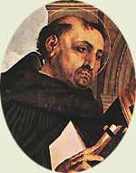

|  |
|---|
[70470] De articulis Fidei, pr. Postulat a me vestra dilectio ut de articulis fidei et Ecclesiae sacramentis aliqua vobis compendiose pro memoriali transcriberem, cum dubitationibus quae circa haec moveri possent. Verum cum omne theologorum studium versetur circa dubietates contingentes articulos fidei et Ecclesiae sacramenta, si ad plenum vestrae petitioni satisfacere vellem, oporteret totius theologiae comprehendere summatim difficultates: quod quantum sit operosum, advertit vestra prudentia. Unde ad praesens vobis sufficiat, si articulos fidei et Ecclesiae sacramenta breviter vobis distinguam, et qui errores sunt circa quemlibet eorum vitandi.
[70472] De articulis Fidei, pars 1 In primis igitur vos scire oportet, quod tota fides Christiana circa divinitatem et humanitatem Christi versatur. Unde Christus voce Ioannis loquens ait, Ioan. XIV, 1: creditis in Deum, et in me credite. Circa utrumque autem horum a quibusdam sex, a quibusdam septem articuli distinguuntur: et sic omnes articuli secundum quosdam duodecim, secundum quosdam quatuordecim esse dicuntur. Primo igitur sex articulos sic distinguunt circa fidem divinitatis. Sunt enim circa divinitatem tria consideranda, scilicet unitas divinae essentiae, Trinitas personarum, et effectus divinae virtutis. Primus igitur articulus est ut credamus essentiae divinae unitatem, secundum illud Deut. VI, 4: audi Israel: dominus Deus tuus, Deus unus est. Contra hunc autem articulum plures errores vitandi occurrunt. Primo quidem quorundam gentilium sive Paganorum, ponentium plures deos, contra quos dicitur Exod. XX, 3: non habebis deos alienos coram me. Secundus est error Manichaeorum, qui ponunt duo principia esse: unum a quo sunt omnia bona, aliud a quo sunt omnia mala, contra quos dicitur Isai. XLV, 6: ego dominus non est alter formans lucem, et creans tenebras, faciens pacem, et creans malum: quia ipse secundum suam iustitiam infligit malum poenae, cum esse conspicit in sua creatura malum culpae. Tertius est error Anthropomorphitarum ponentium unum Deum, sed dicentium eum corporeum, et ad modum humani corporis formatum, contra quos dicitur Ioan. IV, 24: spiritus est Deus; et Isai. XL, 18: cui similem fecistis Deum, aut quam imaginem ponetis ei? Quartus est error Epicureorum ponentium quod Deus non habet providentiam et scientiam de rebus humanis, contra quos dicitur I Petr. ult., 7: omnem sollicitudinem proiicientes in eum, quoniam ipsi cura est de vobis. Quintus error est quorundam gentilium philosophorum dicentium Deum non esse omnipotentem, sed quod solum potest ea quae naturaliter fiunt, contra quos dicitur in Psal. CXIII, 3: omnia quaecumque voluit, dominus fecit. Omnes igitur hi derogant unitati divinae essentiae vel perfectioni, unde contra omnes ponitur in symbolo: credo in unum Deum patrem omnipotentem. Secundus articulus est, quod sunt tres personae divinae in una essentia, secundum illud I Ioan. ult., 7: tres sunt qui testimonium dant in caelo, pater, verbum et spiritus sanctus: et hi tres unum sunt. Contra hunc autem articulum sunt plures errores. Primus fuit Sabellii, qui posuit unam essentiam, sed Trinitatem personarum negavit, dicens, quod una persona quandoque dicitur pater, quandoque filius, quandoque spiritus sanctus. Secundus est error Arii, qui posuit tres personas, sed negavit unitatem essentiae, dicens filium esse alterius substantiae a patre, et esse creaturam, et minorem patre, et sibi non coaequalem nec coaeternum, sed quod incepit esse postquam non fuerat, et contra hos duos errores dicit dominus, Ioan. X, 30: ego et pater unum sumus, quia, ut dicit Augustinus, quod dicit unum, liberat te ab Ario; quod dicit sumus, pluraliter, liberat te a Sabellio. Tertius est error Eunomii, qui posuit filium dissimilem patri, contra quem dicitur Coloss. I, 15: qui est imago Dei invisibilis. Quartus est error Macedonii, qui posuit spiritum sanctum esse creaturam, contra quem dicitur II Corinth. III, 17: dominus autem spiritus est. Quintus est error Graecorum, qui dicunt spiritum sanctum procedere a patre, sed non a filio, contra quos dicitur Ioan. XIV, 26: Paraclitus autem spiritus sanctus, quem mittet pater in nomine meo: quia scilicet eum mittit pater tanquam spiritum filii, et a filio procedentem, et Ioan. XVI, 14, dicitur: ille me clarificabit, quia de meo accipiet. Et contra hos omnes errores in symbolo dicitur: credo in Deum patrem (...) et in filium eius unigenitum, non factum, consubstantialem patri (...) et in spiritum sanctum dominum et vivificantem qui ex patre filioque procedit. Alii vero quatuor articuli divinitatis pertinent ad effectus divinae virtutis, quorum primus, qui est tertius, pertinet ad creationem rerum in esse naturae, secundum illud Psalm. CXLVIII, 5: dixit et facta sunt. Contra hunc articulum primo quidem erravit Democritus et Epicurus, ponentes quod nec materia mundi nec ipsa mundi compositio est a Deo, sed quod mundus est casu factus per concursum corporum indivisibilium, quae rerum principia aestimabant, contra quos dicitur in Psal. XXXII, v. 6: verbo domini caeli firmati sunt, idest secundum rationem aeternam, non autem casu. Secundus est error Platonis et Anaxagorae, qui posuerunt mundum factum a Deo, sed ex materia praeiacenti, contra quos dicitur in Psal. CXLVIII, 5: mandavit, et creata sunt, idest ex nihilo facta. Tertius est error Aristotelis, qui posuit mundum a Deo factum non esse, sed ab aeterno fuisse, contra quod dicitur Genes. I, 1: in principio creavit Deus caelum et terram. Quartus est error Manichaeorum, qui posuerunt Deum factorem invisibilium, sed visibilia a Diabolo facta, contra quos dicitur Hebr. XI, 3: fide intelligimus aptata esse saecula verbo Dei, ut ex invisibilibus visibilia fierent. Quintus est error Simonis magi et Menandri eius discipuli, et multorum aliorum haereticorum eos sequentium, qui creationem mundi non Deo, sed Angelis attribuunt, contra quos dicit Paulus Act. XVII, v. 24: Deus qui fecit mundum, et omnia quae in eo sunt. Sextus est error eorum qui posuerunt, Deum per seipsum non gubernare mundum, sed per quasdam potestates sibi subiectas, contra quos dicitur Iob. XXXIV, 13: quem constituit alium super terram, aut quem posuit super orbem quem fabricatus est? Et contra hos errores dicitur in symbolo: factorem vel creatorem caeli et terrae, visibilium omnium et invisibilium. Quartus articulus pertinet ad effectum gratiae, per quam vivificatur Ecclesia a Deo, secundum illud Roman. III, v. 24: iustificati gratis per gratiam ipsius, scilicet Dei: et sub articulo isto comprehenduntur omnia sacramenta Ecclesiae, et quaecumque pertinent ad Ecclesiae unitatem, et dona spiritus sancti, et iustitia hominum. Et quia de sacramentis Ecclesiae posterius est tractandum, de his interim supersedeamus, et alios errores contra hunc articulum exponamus. Quorum primus est Cerinthi et Ebionis, et etiam Nazaraeorum, qui dixerunt gratiam Christi non sufficienter ad salutem operari, nisi aliquis circumcisionem et alia legis mandata custodiat, contra quos dicitur Roman. III, 28: arbitramur iustificari hominem per fidem sine operibus legis. Secundus est error Donatistarum, qui posuerunt gratiam Christi solum in Africa remansisse, quia scilicet totus alius mundus communicabat Caeciliano Carthaginensi episcopo, quem ipsi condemnaverunt, et in hoc negabant unitatem Ecclesiae, contra quos dicitur ad Coloss. III, 11: in Christo Iesu non est gentilis et Iudaeus, circumcisio et praeputium, barbarus et Scytha, servus et liber; sed omnia in omnibus Christus. Tertius est error Pelagianorum, qui quidem primo negaverunt peccatum originale esse in parvulis, contra id quod dicit apostolus ad Roman. V, 12: per unum hominem peccatum in hunc mundum intravit, et per peccatum mors: ita et in omnes homines mors pertransiit, in quo omnes peccaverunt; et in Psalm. l, 7, dicitur: ecce in iniquitatibus conceptus sum. Secundo dicunt quod principium boni operis inest homini a seipso, sed consummatio est a Deo, contra id quod dicit apostolus Philipp. II, 13: Deus est qui operatur in vobis et velle et perficere pro bona voluntate. Tertio dicunt gratiam dari homini secundum sua merita, contra id quod dicitur Rom. XI, 6: si autem gratia, iam non ex operibus: alioquin gratia iam non esset gratia. Quartus error est Origenis, qui posuit omnes animas creatas cum Angelis simul, et pro diversitate eorum quae ibi egerunt, quosdam homines vocari a Deo per gratiam, quosdam vero in infidelitate relinqui, contra quod dicit apostolus ad Rom. IX, 11: cum nondum nati essent, aut aliquid boni egissent aut mali (ut secundum electionem propositum Dei maneret) non ex operibus, sed ex vocante dictum est ei, quia maior serviet minori. Quintus error est Cathaphrygiarum, idest Montani, Priscae, et Maximillae qui dicunt, prophetas quasi arreptitios fuisse, et quod non prophetaverunt per spiritum sanctum, contra quos dicitur II Petr. I, 21: non enim voluntate humana allata est aliquando prophetia; sed spiritu sancto inspirati locuti sunt sancti Dei homines. Sextus est error Cerdonis, qui primo dixit, Deum legis et prophetarum non esse patrem Christi, nec bonum Deum esse, sed iustum: patrem vero Christi bonum esse; quem etiam Manichaei secuti sunt, legem reprobantes: contra quos dicitur Roman. VII, 12: lex quidem sancta, et mandatum sanctum et iustum et bonum: et ibid. I, 2, dicitur: quod ante promiserat per prophetas suos in Scripturis sanctis de filio suo. Septimus error est eorum qui quaedam quae ad perfectionem vitae pertinent, asserunt esse ad necessitatem salutis. Quorum quidam fuerunt qui se arrogantissime apostolos vocaverunt, qui nullam spem putant habere salutis eos qui coniugibus utuntur, et propria possident. Alii vero, scilicet Tatiani, non vescuntur carnibus, et eas omnino abominantur, secundum illud apostoli I ad Timoth. IV, 1-3: in novissimis temporibus discedent quidam a fide, attendentes spiritibus erroris, et doctrinis Daemoniorum, in hypocrisi loquentium mendacium et cauteriatam habentium suam conscientiam, prohibentium nubere, et abstinere a cibis, quos Deus creavit ad percipiendum cum gratiarum actione fidelibus, et his qui cognoverunt veritatem. Dicunt enim quod promissio de adventu spiritus sancti non fuit in apostolis completa, sed in eis, contra illud quod dicitur Act. II. Eutychiani etiam dicunt homines non posse salvari nisi continue orent, propter illud quod dominus dicit Luc. XVIII, 1: oportet semper orare, et non deficere: quod sic accipitur, secundum Augustinum, ut nullum diem praetermittant circa orandi opera. Alii vero qui Passalonitae dicuntur, intantum silentio student, ut naribus et labiis digitum apponant: passalos enim Graece dicitur palus, et ranchos nasus. Quidam etiam dicunt, quod homines non possunt salvari nisi semper nudis pedibus ambulent: contra quos omnes dicit apostolus I Corinth. X, 22: omnia mihi licent, sed non omnia expediunt, ex quibus datur intelligi quod licet aliqua a sanctis viris assumantur tanquam expedientia, non tamen propter hoc opposita redduntur illicita. Octavus error est eorum qui dicunt e contrario, opera perfectionis non esse praeferenda communi vitae fidelium, sicut Iovinianus posuit quod virginitas non praefertur coniugio, contra illud quod dicitur I Corinth. VII, 38: qui matrimonio iungit virginem suam bene facit; et qui non iungit melius facit; et sicut Vigilantius, qui aequavit statum divitias possidentium statui paupertatis propter Christum assumptae, contra quem dicit dominus Matth. XIX, 21: si vis perfectus esse, vade, et vende omnia quae habes, et da pauperibus, et habebis thesaurum in caelo; et veni, sequere me. Nonus error est negantium liberum arbitrium, sicut quidam negavit, dicens, animas quae sunt malae creationis, non posse non peccare, contra quos dicitur I Ioan. II, 1: haec scribo vobis ut non peccetis. Decimus error est Priscianistarum, et etiam mathematicorum dicentium, homines fatalibus stellis obligatos, ita scilicet quod eorum opera sunt necessitati stellarum subiecta, contra quos dicitur Ierem. X, 2: a signis caeli nolite metuere quae timent gentes. Undecimus error est dicentium quod homines Dei gratiam et caritatem habentes, peccare non possunt, ita quod asserunt eos qui aliquando peccaverunt, nunquam caritatem habuisse, contra quos dicitur Apocal. II, 4-5: caritatem tuam primam reliquisti: memor esto itaque unde excideris. Duodecimus error est eorum qui ea quae ab Ecclesia Dei universaliter sunt statuta, dicunt non esse observanda, sicut Aeriani, qui dicunt statuta ieiunia non esse solemniter celebranda, sed cum quis voluerit, ieiunet, ne videatur esse sub lege; et sicut Tesseradecathitae, idest Quartodecumani, qui dicunt quartadecima luna Pascha esse celebrandum, quocumque die septimanae occurreret; et eadem ratio est de quibuscumque ab Ecclesia statutis. Et contra omnes istos errores in symbolo apostolorum dicitur: sanctam Ecclesiam Catholicam, sanctorum communionem, remissionem peccatorum; et in symbolo patrum dicitur: qui locutus est per prophetas, et unam sanctam Catholicam et apostolicam Ecclesiam. Confiteor unum Baptisma in remissionem peccatorum. Quintus articulus est de resurrectione mortuorum, de quo dicitur I Corinth. XV, 51: omnes quidem resurgemus. Contra quem etiam sunt plures errores. Quorum primus est error Valentini, qui carnis resurrectionem negavit, quem etiam plures haeretici sunt secuti: contra quem dicitur I Corinth. XV, 12: si Christus praedicatur quod resurrexit a mortuis; quomodo quidam dicunt in vobis, quoniam resurrectio mortuorum non est? Secundus est error Hymenaei et Phileti, contra quos dicit apostolus II Timoth. II, quod a veritate exciderunt, dicentes resurrectionem iam factam, vel quia non credebant nisi resurrectionem spiritualem, vel quia non credebant alios resurrecturos, nisi illos qui cum Christo resurrexerunt. Tertius est error quorundam haereticorum modernorum, qui dicunt resurrectionem futuram, non tamen eorundem corporum, sed quod animae resument quaedam corpora caelestia, contra quos apostolus dicit I Corinth. XV, 53: oportet corruptibile hoc induere incorruptionem, et mortale hoc induere immortalitatem. Quartus est error Eutychii patriarchae Constantinopolitani, qui posuit corpora nostra in resurrectione aeri vel vento similari, quod Gregorius narrat in XIV Moralium, contra quem est quod dominus post resurrectionem suam corpus suum discipulis palpandum praebuit, dicens, Luc. ult., 39: palpate, et videte, cum tamen apostolus dicat, Philip. III, 21, quod reformabit corpus humilitatis nostrae configuratum corpori claritatis suae. Quintus error est dicentium, quod corpora humana in resurrectione vertentur in spiritum, contra quos dicitur Luc. ult., v. 39: spiritus carnem et ossa non habet, sicut me videtis habere. Sextus error est Cerinthi, qui mille annos post resurrectionem in terreno regno fabulatur futuros, in quibus homines carnales ventris ac libidinis voluptates habebunt, contra quem dicitur Matth. XXII, 30: in resurrectione neque nubent neque nubentur. Quidam dixerunt etiam, quod post resurrectionem mortuorum, in eodem statu in quo nunc est, mundus manebit, contra quos dicitur Apoc. XXI, 1: vidi caelum novum et terram novam. Et apostolus dicit Roman. VIII, 21, quod ipsa creatura liberabitur a servitute corruptionis in libertatem gloriae filiorum Dei. Et contra omnes hos errores dicitur: carnis resurrectionem; et in alio symbolo: exspecto resurrectionem mortuorum. Sextus articulus pertinet ad ultimum effectum divinitatis, qui est remuneratio bonorum et punitio malorum, secundum illud Psalm. LXI, 12: tu reddes unicuique iuxta opera sua. Et circa hunc etiam fuerunt multi errores. Quorum primus est dicentium, quod anima moritur cum corpore, sicut Arabs asserit, vel etiam post modicum intervallum, sicut Zeno dixit, ut recitatur in Lib. de ecclesiasticis dogmatibus, contra quod est quod apostolus dicit Philip. I, 23: desiderium habens dissolvi, et esse cum Christo; et Apocal. VI, 9: vidi subtus altare Dei animas interfectorum propter verbum Dei. Secundus error est Origenis, qui posuit homines et Daemones damnatos iterum posse purgari, et redire in gloriam; et Angelos sanctos et homines beatos iterum posse deduci ad mala, quod est contra auctoritatem domini, Matth. XXV, 46: ibunt hi in supplicium aeternum; iusti autem in vitam aeternam. Tertius est error dicentium, omnes poenas et omnia praemia malorum et bonorum futuras esse aequales, contra quorum primum dicitur I Corinth. XV, 41: stella a stella differt in claritate: sic et resurrectio mortuorum: contra secundum quod dicitur Matth. XI, 22: Tyro et Sidoni remissius erit in die iudicii quam vobis. Quartus error est dicentium animas malorum non statim post mortem descendere ad Infernum, nec aliquas sanctorum animas Paradisum intrare ante diem iudicii, contra quos dicitur Luc. XVI, 22, quod mortuus est dives, et sepultus est in Inferno; et II Corinth. V, 1, dicitur: scimus enim quoniam si terrestris domus nostra huius habitationis dissolvatur, quod aedificationem ex Deo habemus domum non manu factam, sed aeternam in caelis. Quintus est error dicentium, non esse Purgatorium animarum post mortem, eorum scilicet qui in caritate decesserunt, sed aliquid purgabile habent, contra quos dicitur I Corinth. III, 12: si quis aedificaverit supra fundamentum (scilicet fidei per dilectionem operantis) lignum, foenum, stipulam (...) detrimentum patietur, ipse autem salvus erit; sic tamen quasi per ignem: et contra hos errores dicitur in symbolo, vitam aeternam. Amen. Alii vero qui septem articulos circa fidem divinitatis assignant, eos sic distinguunt, ut primus sit de essentiae unitate; secundus de persona patris; tertius de persona filii; quartus de persona spiritus sancti; quintus de effectu creationis; sextus de effectu iustificationis; septimus de effectu remunerationis, sub quo comprehendunt resurrectionem et vitam aeternam. Et sic dum praedictorum sex articulorum secundum dividunt in tres, quintum vero et sextum compingunt in unum, fiunt secundum eos septem articuli. Nec refert quantum ad veritatem fidei vel errorum vitationem, qualiter distinguantur. Nunc restat considerare articulos qui pertinent ad humanitatem Christi. Circa quam sex articulos distinguunt: quorum primus est circa conceptionem et nativitatem Christi, secundum quod dicitur Isai. VII, 14, et introducitur Matth. I, 23: ecce virgo concipiet, et pariet filium, et vocabitur nomen eius Emmanuel. Et circa hunc multi fuerunt errores, quorum primus fuit dicentium Christum fuisse purum hominem, et quod non semper fuit, sed a Maria sumpsit exordium, et iste est error Carpocratis et Cerinthi et Ebionis et Pauli Samosateni et Photini, contra quos dicitur Rom. IX, 5: ex quibus est Christus secundum carnem, qui est super omnia Deus benedictus in saecula. Secundus error est Manichaeorum dicentium, quod Christus non habuit verum corpus, sed phantasticum, contra quod est quod dominus Luc. ult., reprehendit errorem discipulorum suorum, qui conturbati et perterriti existimabant se spiritum videre; et Matth. XIV, 26: videntes eum supra mare ambulantem, turbati sunt dicentes, quia phantasma est, et prae timore clamaverunt: quorum opinionem dominus removit, dicens, vers. 27: habete fiduciam, ego sum, nolite timere. Tertius error est Valentini, qui dicit, Christum caeleste corpus attulisse, nihilque de virgine assumpsisse, sed per ipsam tanquam per rivum aut fistulam sine ulla de illa assumpta carne transisse, contra quod dicitur Galat. IV, 4: misit Deus filium suum factum ex muliere. Quartus est error Apollinaris qui dixit, aliquid verbi in carnem fuisse conversum aut transmutatum, non autem carnem de Mariae carne susceptam. Propter illud enim quod dicitur Ioan. I, 14: verbum caro factum est, intelligit quod verbum sit in carnem conversum, contra quod statim ibidem subditur: et habitavit in nobis. Non autem in nostra natura integre habitasset, si fuisset in carnem conversum. Unde intelligendum est: verbum caro factum est, idest, verbum factum est homo. Sic enim frequenter caro sumitur in Scripturis, secundum illud Isai. XL, 5: videbit omnis caro pariter quod os domini locutum est. Quintus error est Arii, qui posuit Christum humanam animam non habuisse, sed verbum fuisse loco animae, contra quod dicitur Ioan. X, 17: ego pono animam meam, ut iterum sumam eam. Nemo tollit eam a me, sed ego pono eam a meipso. Sextus error est Apollinaris, qui cum praedicto testimonio et aliis convinceretur humanam animam Christum habuisse, posuit quod Christus non habuit intellectum humanum, sed verbum Dei fuit ei loco intellectus, contra quod est quod dominus se hominem esse confitetur. Ioan. VIII, 40: quaeritis me interficere, hominem qui veritatem locutus sum vobis. Non autem fuisset homo, si anima rationali caruisset. Septimus est error Eutychis qui posuit in Christo unam naturam compositam ex divinitate et humanitate, contra quod apostolus dicit, Phil. II, 6: qui cum in forma Dei esset, non rapinam arbitratus est esse se aequalem Deo; sed semetipsum exinanivit, formam servi accipiens, in similitudinem hominum factus, et habitu inventus ut homo: manifeste distinguens in eo duas naturas, divinam et humanam. Octavus error est Monothelitarum, ponentium in Christo unam scientiam, operationem et voluntatem, contra quos dominus dicit Matth. XXVI, 39: non sicut ego volo, sed sicut tu. Ubi manifeste in Christo ponitur alia voluntas humana, alia divina, quae est communis patri et filio. Nonus error est Nestorii, qui posuit Christum, Deum perfectum, et hominem perfectum, et tamen aliam dixit esse personam Dei, aliam hominis, et quod non est facta unio Dei et hominis in una persona Christi, sed solum secundum gratiae inhabitationem, ita quod negat beatam virginem esse matrem Dei, sed dicit eam esse matrem hominis Christi, contra quod dicitur Luc. I, 35: quod nascetur ex te sanctum, vocabitur filius Dei. Decimus error est Carpocratis, qui hominem Christum de utroque natum putasse perhibetur, contra quod dicitur Matth. I, 18: antequam convenirent, inventa est in utero habens de spiritu sancto. Undecimus error est Helvidii dicentis, quod postquam beata virgo peperit filium Christum, ex Ioseph plures filios genuit, contra quod dicitur Ezech. XLIV, 2: porta haec clausa erit, et non aperietur, et vir non transibit per eam: quoniam dominus Deus Israel ingressus est per eam, eritque clausa principi. Et contra omnes hos errores in symbolo apostolorum dicitur: conceptus est de spiritu sancto, natus ex Maria virgine: et in symbolo patrum: qui propter nos homines et propter nostram salutem descendit de caelis, et incarnatus est de spiritu sancto ex Maria virgine, et homo factus est. Secundus articulus est de passione et morte Christi, secundum quod ipse dominus praedixit, Matth. XX, 18: ecce ascendimus Ierosolymam, et filius hominis tradetur principibus sacerdotum et Scribis: et condemnabunt eum morte, et tradent eum gentibus ad illudendum et flagellandum et crucifigendum. Et circa hunc articulum primus quidem est error Manichaeorum, qui, sicut corpus Christi esse phantasticum asserunt, passionem Christi non in veritate, sed in phantasia esse arbitrantur, contra quod dicitur Isa. LIII, 4: vere languores nostros ipse tulit, et dolores nostros ipse portavit. Et iterum 7, tanquam ovis ad occisionem ductus est: quod etiam inducitur Act. VIII. Secundus est error Gaiani qui in Christo unam naturam posuit, sed incorporalem et immortalem, contra quod dicitur I Petr. III, 18: Christus semel pro peccatis nostris mortuus est. Et contra hos errores ponitur in symbolo: crucifixus, mortuus et sepultus. Tertius articulus est de resurrectione Christi, secundum quod ipse dicit Matth. XX, 19: tertia die resurget. Et circa hunc articulum primo quidem erravit Cerinthus asserens Christum non surrexisse, sed resurrecturum esse, contra quod dicitur I Corinth. XV, 4: resurrexit tertia die secundum Scripturas. Secundus error est qui imponitur Origeni, quod sit iterum pro salute hominum et Daemonum passurus, contra quod dicitur Rom. VI, 9: Christus resurgens ex mortuis, iam non moritur; mors illi ultra non dominabitur. Quod enim mortuus est peccato, mortuus est semel; quod autem vivit, vivit Deo. Et contra hos errores dicitur in symbolo: tertia die resurrexit a mortuis. Quartus articulus est de descensu ad Inferos: credimus enim animam Christi descendisse ad Inferos, corpore iacente in sepulcro, Ephes. IV, 9: descendit primum in inferiores partes terrae. Unde in symbolo dicitur: descendit ad Inferos; quod est contra quosdam, qui posuerunt ipsum Christum non descendisse per seipsum ad Inferos, cum tamen Petrus dicat Act. II, 24, quod non est derelictus in Inferno. Quintus articulus est de ascensione Christi in caelum, de quo ipse dicit Ioan. XX, 17: ascendo ad patrem meum et patrem vestrum, Deum meum et Deum vestrum. Circa quam errant Seleuciani, qui negant salvatorem in carne sedere ad dexteram Dei patris, sed quod eam exuit et in sole posuit. Circa quod dicitur Marc. ult., 19: dominus quidem Iesus postquam locutus est eis, ascendit in caelum, et sedet a dextris Dei. Unde in symbolo dicitur: ascendit in caelum, sedet ad dexteram patris. Sextus articulus est de adventu ad iudicium, de quo dominus dicit Matth. XXV, 31: cum venerit filius hominis in maiestate sua, et omnes Angeli eius cum eo, tunc sedebit super sedem maiestatis suae; et Petrus dicit actuum X, 42: hic est qui constitutus est a Deo iudex vivorum et mortuorum, sive eorum qui iam mortui sunt, et eorum qui in adventu Christi vivi invenientur. Et circa hoc aliqui errant, de quibus dicitur II Petr. III, 3: venient in novissimis diebus in deceptione illusores, iuxta proprias concupiscentias dicentes: ubi est repromissio aut adventus eius? Contra quos dicitur Iob. XIX, 29: fugite a facie gladii, quoniam ultor iniquitatum gladius est, et scitote esse iudicium. Unde in symbolo dicitur: qui venturus est iudicare vivos et mortuos. Illi autem qui septem articulos humanitatis esse ponunt, distinguunt primum articulum in duos, ponentes scilicet sub alio articulo conceptionem Christi, et sub alio eius nativitatem.
[70474] De articulis Fidei, pars 2 Nunc restat considerandum de Ecclesiae sacramentis, quae tamen omnia comprehenduntur sub uno articulo, quia ad effectum gratiae pertinent. Sed quia specialem de sacramentis fecistis quaestionem, de his seorsum agendum est. Est primo igitur sciendum, quod sicut Augustinus dicit in X Lib. de Civit. Dei, sacramentum est sacrum signum, vel sacrae rei signum. Fuerunt autem in veteri lege quaedam sacramenta, idest sacrae rei signa, sicut agnus paschalis, et alia sacramenta legalia, quae quidem solum significabant Christi gratiam, non tamen eam causabant. Unde apostolus Galat. IV, 9 vocat ea egena et infirma elementa: egena quidem, quia gratiam non continebant; et infirma, quia gratiam conferre non poterant. Sacramenta vero novae legis continent et conferunt gratiam. In eis enim virtus Christi sub tegumento rerum visibilium secretius operatur salutem, ut dicit Augustinus. Et ideo sacramentum novae legis est invisibilis gratiae visibilis forma, ut eius similitudinem gerat et causa existat. Sicut ablutio quae fit in aqua Baptismatis repraesentat interiorem mundationem quae fit a peccatis per virtutem Baptismi. Sunt autem sacramenta legis novae septem, scilicet Baptismus, confirmatio, Eucharistia, poenitentia, extrema unctio, ordo et matrimonium: quorum prima quinque ordinantur ad perfectionem unius hominis in seipso, sed alia duo, scilicet ordo et matrimonium, ordinantur ad perfectionem et multiplicationem totius Ecclesiae. Vita enim spiritualis conformatur vitae corporali. In vita autem corporali perficitur homo primo per generationem, qua nascitur in hoc mundo; secundo per augmentum, quo perducitur ad quantitatem et virtutem perfectam; tertio per cibum, quo sustentatur hominis vita et virtutes. Et haec quidem sufficerent, si nunquam eum infirmari contingeret; sed quia frequenter homo infirmatur, quarto indiget sanatione. Sic est in vita spirituali. Primo enim indiget homo regeneratione, quae fit per Baptismum, secundum illud Ioan. III, 5: nisi quis renatus fuerit ex aqua et spiritu sancto, non potest introire in regnum Dei. Secundo oportet quod homo accipiat perfectam virtutem quasi quoddam spirituale augmentum, scilicet per sacramentum confirmationis ad similitudinem apostolorum, quos spiritus sanctus in eos veniens confirmavit. Unde dominus dixit eis Luc. ult., 49: vos sedete in civitate (Ierusalem) quoadusque induamini virtute ex alto. Tertio oportet quod homo spiritualiter nutriatur per Eucharistiae sacramentum, secundum illud Ioan. VI, 54: nisi manducaveritis carnem filii hominis et biberitis eius sanguinem, non habebitis vitam in vobis. Quarto oportet quod homo sanetur spiritualiter per sacramentum poenitentiae, secundum illud Psal. XL, 5: sana, domine, animam meam, quia peccavi tibi. Quinto spiritualiter simul et corporaliter per sacramentum extremae unctionis sanatur, secundum illud Iac. ult., 14: infirmatur aliquis in vobis? Inducat presbyteros Ecclesiae, et orent super eum, ungentes eum oleo in nomine domini: et oratio fidei salvabit infirmum, et alleviabit eum dominus; et si in peccatis sit, dimittentur ei. Quantum autem ad communem Ecclesiae utilitatem ordinantur duo sacramenta, scilicet ordo et matrimonium. Nam per ordinem Ecclesia gubernatur et multiplicatur spiritualiter, et per matrimonium multiplicatur corporaliter. Est autem considerandum quod praedicta septem sacramenta quaedam habent communia, et quaedam propria. Commune quidem est omnibus sacramentis quod conferant gratiam, sicut dictum est. Commune etiam est omnibus, quod sacramentum consistit in verbis et rebus corporalibus, sicut in Christo, qui est sacramentorum auctor, est verbum caro factum. Et sicut caro Christi sanctificata est, et virtutem sanctificandi habet per verbum sibi unitum, ita et res sacramentorum sanctificantur, et vim sanctificandi habent per verba quae in his proferuntur. Unde Augustinus dicit super Ioan.: accedit verbum ad elementum, et fit sacramentum. Unde verba quibus sanctificantur sacramenta, dicuntur sacramentorum formae; res autem sanctificatae dicuntur sacramentorum materiae, sicut aqua est materia Baptismi et chrisma confirmationis. Requiritur etiam in quolibet sacramento persona ministri conferentis sacramentum cum intentione conferendi et faciendi quod facit Ecclesia: quorum trium si aliquid desit, idest si non sit debita forma verborum, et si non sit debita materia, et si minister sacramenti non intendit sacramentum conficere, non perficitur sacramentum. Impeditur etiam effectus sacramenti per culpam recipientis, puta, si fictus accedat, et non corde parato ad suscipiendum sacramentum. Talis enim licet sacramentum suscipiat, effectum tamen sacramenti, idest gratiam spiritus sancti, non recipit, quia, ut dicitur Sap. I, 5: spiritus sanctus disciplinae effugiet fictum. E contrario autem sunt alii qui nunquam recipiunt sacramentum, qui tamen effectum sacramenti suscipiunt propter devotionem quam habent ad sacramentum, quod habent in voto, sive desiderio. Sunt autem et quaedam propria sacramentis quibusdam. Nam quaedam horum imprimunt characterem, idest spirituale quoddam signum distinctivum a ceteris, sicut in sacramento ordinis vel sacramento Baptismi, et in sacramento confirmationis: et talia sacramenta nunquam iterantur super eandem personam. Nunquam enim ille qui est baptizatus, debet ulterius baptizari; neque confirmatus, iterum confirmari; neque ordinatus, iterum ordinari: quia character, qui in huiusmodi sacramentis imprimitur, indelebilis est. In aliis vero sacramentis non imprimitur character suscipienti ea, et ideo possunt iterari quantum ad personam suscipientem, non tamen quantum ad materiam. Potest enim unus homo frequenter poenitere, frequenter Eucharistiam sumere, frequenter extremam unctionem suscipere, frequenter matrimonium contrahere, non tamen eadem hostia debet frequenter consecrari, nec idem oleum infirmorum debet frequenter benedici. Est etiam alia differentia, quia quaedam sacramenta sunt de necessitate salutis, sicut Baptismus et poenitentia, quibus non existentibus, non potest homo salvari. Alia vero sacramenta non sunt de necessitate salutis, quia sine eis potest esse salus, nisi propter contemptum sacramenti. His visis in communi circa Ecclesiae sacramenta, oportet quaedam in speciali de singulis dicere. Primo igitur circa Baptismum sciendum est, quod materia Baptismi est aqua vera et naturalis, nec differt utrum sit frigida vel calefacta. In aquis autem artificialibus, sicut est aqua rosacea, et aliis huiusmodi, non potest baptizari. Forma autem Baptismi est ista: ego te baptizo in nomine patris et filii et spiritus sancti. Minister huius sacramenti proprius est sacerdos, cui ex officio competit baptizare. In articulo tamen necessitatis, non solum diaconus, sed etiam laicus et mulier, immo Paganus et haereticus potest baptizare, dummodo servet formam Ecclesiae, et intendat facere quod facit Ecclesia. Si vero extra articulum necessitatis aliquis a talibus baptizetur, recipit quidem sacramentum, et non debet iterum baptizari; non tamen recipit gratiam sacramenti, quia ficti deputantur, utpote contra statutum Ecclesiae sacramentum accipientes. Effectus autem Baptismi est remissio culpae originalis et actualis, et etiam totius culpae et poenae, ita quod baptizatis non est aliqua satisfactio iniungenda pro peccatis praeteritis, sed statim morientes post Baptismum introducuntur ad gloriam Dei. Unde effectus Baptismi ponitur apertio ianuae Paradisi. Circa hoc sacramentum fuerunt aliqui errores. Primus quidem fuit Solentianorum, qui Baptismum in aqua non recipiunt, sed solum Baptismum spiritualem, contra quos dicit dominus, Ioan. III, 5: nisi quis renatus fuerit ex aqua et spiritu sancto, non potest introire in regnum Dei. Secundus error fuit Donatistarum rebaptizantium eos qui sunt baptizati a Catholicis, contra quos dicitur Ephes. IV, 5: una fides, unum Baptisma. Est autem alter error eorum: nam dicunt quod homo in peccato existens, non potest baptizare, contra quos dicitur Ioan. I, 33: super quem videris spiritum descendentem et manentem, hic est qui baptizat, scilicet Christus. Unde non nocet homini malus minister nec in hoc nec in aliis sacramentis, quia Christus est bonus qui merito suae passionis perficit sacramentum. Quartus error est Pelagianorum, qui dicunt pueros baptizari, ut regeneratione adoptati admittantur ad regnum Dei, de bono in melius translati, non ista regeneratione aliquo malo obligationis veteris absoluti. Secundum sacramentum est confirmationis, cuius materia est chrisma confectum ex oleo, quod significat nitorem conscientiae, et balsamo, quod significat odorem bonae famae, per episcopum benedicto. Forma autem huius sacramenti est talis: consigno te signo crucis, et confirmo te chrismate salutis, in nomine patris et filii et spiritus sancti. Amen. Minister autem huius sacramenti est solum episcopus. Non enim licet sacerdoti confirmandos chrismate in fronte inungere. Effectus autem huius sacramenti est quod in eo datur spiritus sanctus ad robur, sicut datus est apostolis in die Pentecostes, ut scilicet Christianus audacter confiteatur nomen Christi. Et ideo confirmandus in fronte ungitur, in qua est sedes verecundiae, ut scilicet nomen Christi confiteri non erubescat, et praecipue crucem eius, quae est Iudaeis scandalum, gentibus autem stultitia: et propter hoc etiam signo crucis signantur. Circa hoc sacramentum est error quorundam Graecorum dicentium, quod sacerdos simplex hoc sacramentum potest conferre: contra quos dicitur Act. VIII, quod apostoli miserunt Petrum et Ioannem apostolos, qui imponebant manus super eos qui baptizati erant a Philippo diacono, et accipiebant spiritum sanctum. Episcopi autem sunt in Ecclesia loco apostolorum, et loco illius manus impositionis datur in Ecclesia confirmatio. Tertium sacramentum est Eucharistia, cuius materia est panis triticeus, et vinum de vite, modica aqua permixtum, ita quod aqua transeat in vinum: nam aqua significat populum, qui incorporatur Christo. De alio autem pane quam tritici et alio vino non potest hoc confici sacramentum. Forma autem huius sacramenti sunt ipsa verba Christi dicentis: hoc est corpus meum; et hic est calix sanguinis mei, novi et aeterni testamenti, mysterium fidei, qui pro vobis et pro multis effundetur in remissionem peccatorum: quia sacerdos in persona Christi loquens, hoc conficit sacramentum. Minister autem sacramenti huius est sacerdos, neque aliquis alius potest corpus Christi conficere. Effectus huius duplex est, quorum primus consistit in ipsa consecratione sacramenti: nam virtute praedictorum verborum panis convertitur in corpus Christi, et vinum in sanguinem, ita tamen quod totus Christus continetur sub speciebus panis, quae remanent sine subiecto, et totus Christus continetur sub speciebus vini: et sub qualibet parte hostiae consecratae, vini consecrati, separatione facta, est totus Christus. Alius vero effectus huius sacramenti, quem in anima digne sumentis facit, est adunatio hominis ad Christum, sicut ipse dicit Ioan. VI, 57: qui manducat meam carnem et bibit meum sanguinem, in me manet, et ego in eo. Et quia per gratiam homo Christo incorporatur et membris eius unitur, dignum est quod hoc sacramentum sumentibus digne gratia augeatur. Sic igitur in hoc sacramento est aliquid quod est sacramentum tantum, scilicet ipsa species panis et vini; et aliquid quod est res et sacramentum, scilicet corpus Christi verum; et aliquid quod est res tantum, scilicet unitas corporis mystici, idest Ecclesiae, quam hoc sacramentum et significat et causat. Fuerunt autem circa hoc sacramentum multi errores. Quorum primus est eorum qui dicunt, quod in hoc sacramento non est verum corpus Christi, sed tantum significative. Auctor erroris eius dicitur fuisse Berengarius, contra quem dicitur Ioan. VI, 56: caro mea vere est cibus, et sanguis meus vere est potus. Secundus est error Artotyritarum qui offerunt in sacramento hoc panem et caseum, dicentes a primis hominibus oblationes de frugibus terrae et ovium celebratas fuisse: contra quod est quod dominus huius sacramenti institutor, panem et vinum discipulis suis dedit. Tertius est error Cathaphrygarum et Praeputiatorum qui de infantis sanguine, quem de toto eius corpore minutis punctorum vulneribus extorquent, quasi Eucharistiam suam conficere perhibentur, immiscentes eum farinae, panemque inde facientes; quod magis est simile sacrificiis Daemonum, quam sacrificiis Christi, secundum illud Psal. CV, 38: effuderunt sanguinem innocentem (...) quem sacrificaverunt sculptilibus Chanaan. Quartus est error aquariorum, qui aquam solam in sacrificiis offerunt, cum tamen Prov. IX, 5, dicatur ex ore sapientiae, qui est Christus: bibite vinum quod miscui vobis. Quintus est error Ophitarum, qui serpentem Christum esse aestimantes, habent unum colubrum assuetum panes lingua lambere, atque ita eis velut Eucharistiam sanctificare. Sextus est error Praeputiatorum, qui tantum dant mulieribus principatum, ut sacerdotio quoque apud eos honorentur. Septimus est error pauperum de Lugduno, qui dicunt quemlibet iustum hominem posse conficere hoc sacramentum. Contra quos errores est quod dominus apostolis suis potestatem tradidit hoc sacramentum celebrandi, unde solum illi qui quadam successione ab apostolis acceperunt hanc potestatem, possunt hoc sacramentum conficere. Octavus est error quorundam, qui dicuntur Adamani, qui imitantes nuditatem Adae, nudi mares feminaeque conveniunt, nudi lectionem audiunt, nudi orant, sacramenta nudi celebrant: contra quos dicitur I Corinth. XIV, 40: omnia honeste et secundum ordinem fiant in vobis. Quartum sacramentum est poenitentia, cuius quasi materia sunt actus poenitentis, qui dicuntur tres poenitentiae partes. Quarum prima est cordis contritio, ad quam pertinet quod homo doleat de peccato commisso, et proponat se de cetero non peccaturum. Secunda pars est oris confessio, ad quam pertinet ut peccator omnia peccata, quorum memoriam habet, suo sacerdoti confiteatur integraliter, non dividens ea diversis sacerdotibus. Tertia pars est satisfactio pro peccatis secundum arbitrium sacerdotis, quae quidem praecipue fit per ieiunium et orationem et eleemosynam. Forma autem huius sacramenti sunt verba absolutionis quae sacerdos profert, cum dicit: ego te absolvo. Minister huius sacramenti est sacerdos habens auctoritatem absolvendi vel ordinariam, vel ex commissione superioris. Effectus huius sacramenti est absolutio a peccato. Est autem contra hoc sacramentum error Novatianorum, qui dicunt hominem post Baptismum peccantem non posse per poenitentiam veniam consequi: contra quos dicitur Apoc. II, 5: memor esto unde excideris, et age poenitentiam, et prima opera fac. Quintum sacramentum est extremae unctionis, cuius materia est oleum olivae per episcopum benedictum. Hoc autem sacramentum non debet dari nisi infirmis, quando timetur de periculo mortis, qui debent inungi in locis quinque sensuum, videlicet in oculis propter visum, in auribus propter auditum, in naribus propter odoratum, in ore propter gustum vel locutionem, in manibus propter tactum, in pedibus propter gressum. Quidam autem inungunt in renibus, ubi viget libido. Forma autem huius sacramenti est ista: per istam unctionem et suam piissimam misericordiam indulgeat tibi dominus quidquid deliquisti per visum; et similiter in aliis. Minister huius sacramenti est sacerdos. Effectus autem huius sacramenti est sanatio mentis et corporis. Contra hoc sacramentum est error Eraconitarum, qui feruntur suos morientes novo modo quasi redimere per oleum et balsamum et aquam, et invocationibus quas Hebraicis verbis dicunt super capita eorum: quod est contra formam a Iacobo traditam, ut supra dictum est. Sextum est sacramentum ordinis. Sunt autem septem ordines: scilicet presbyteratus, diaconatus, subdiaconatus, acolytatus, exorcistae, lectoris et ostiarii. Clericatus autem non est ordo, sed quaedam professio vitae dantium se divino ministerio. Episcopatus autem magis est dignitas quam ordo. Materia autem huius sacramenti est illud materiale, per cuius traditionem confertur ordo: sicut presbyteratus traditur per collationem calicis, et quilibet ordo traditur per collationem illius rei quae praecipue pertinet ad ministerium illius ordinis. Forma autem huius sacramenti est talis: accipe potestatem offerendi sacrificium in Ecclesia pro vivis et mortuis; et idem est dicendum in consimilibus ordinibus. Minister huius sacramenti est episcopus qui confert ordines. Effectus autem huius sacramenti est augmentum gratiae ad hoc quod aliquis sit idoneus minister Christi. Contra hoc sacramentum fuit error aerii, qui dicebat presbyterum ab episcopo non debere discerni. Septimum sacramentum est matrimonium, quod est signum coniunctionis Christi et Ecclesiae. Causa autem efficiens matrimonii est mutuus consensus per verba de praesenti expressus. Est autem triplex bonum matrimonii: quorum primum est proles suscipienda et educanda ad cultum Dei; secundum est fides quam unus coniugum alteri debet servare; tertium est sacramentum, idest indivisibilitas matrimonii, propter hoc quod significat indivisibilem coniunctionem Christi et Ecclesiae. Est autem circa hoc sacramentum multiplex error. Primus quidem est Tatianorum, qui nuptias damnant: contra quos est quod dicitur I Corinth. VII, 28: si nupserit virgo, non peccavit. Secundus est error Ioviniani, qui nuptias aequavit virginitati, de quo supra dictum est. Tertius est error Nicolaitarum, qui indifferenter mutuis uxoribus utuntur. Fuerunt etiam multi alii haeretici turpia quaedam docentes et exercentes, contra id quod dicitur Hebr. ult., 4: sit honorabile connubium in omnibus, et torus immaculatus. Horum autem virtute sacramentorum homo perducitur ad futuram gloriam, quae consistet in septem dotibus: tribus animae, et quatuor corporis. Prima dos animae est visio Dei per essentiam, secundum illud I Ioan. III, 2: videbimus eum sicuti est. Secunda est comprehensio, qua scilicet Deum comprehendemus, quasi meritorum mercedem: I Cor. IX, 24: sic currite ut comprehendatis. Tertia est fruitio, qua in Deo delectabimur, secundum illud Iob. XXII, 26: tunc super omnipotentem deliciis afflues, et elevabis ad Deum faciem tuam. Prima autem dos corporis est impassibilitas, secundum illud I Corinth. XV, 53: oportet corruptibile hoc induere incorruptionem. Secunda est claritas, secundum illud Matth. XIII, 43: fulgebunt iusti sicut sol in regno patris eorum. Tertia est agilitas, per quam celeriter adesse poterunt ubi volent. Sap. III, 7: tanquam scintillae in arundineto discurrent. Quarta est subtilitas, per quam poterunt quaecumque voluerint, penetrare, secundum illud I Corinth. XV, 44: seminatur corpus animale, surget corpus spirituale. Ad quam nos perducat qui vivit et regnat per omnia saecula saeculorum. Amen.